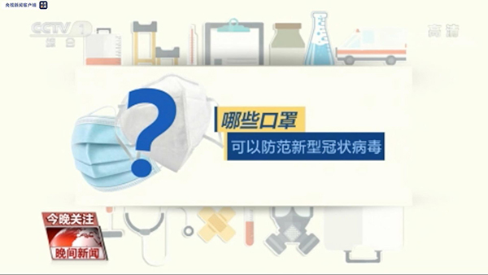
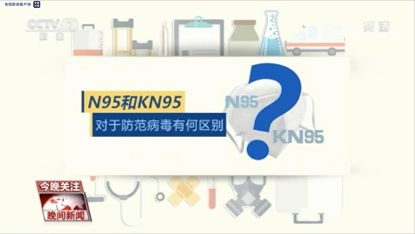
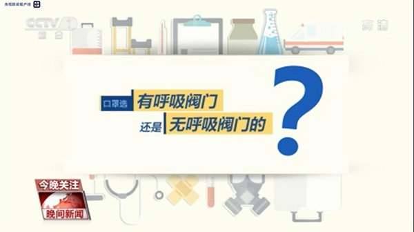
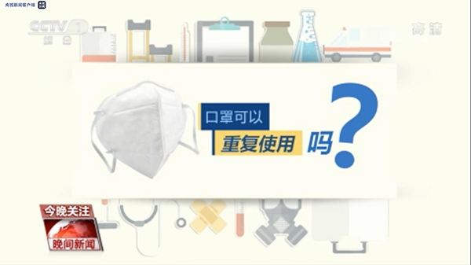

目前，佩戴口罩被认为是防范新型冠状病毒传播的最有效手段之一。不过，目前市面上销售的口罩可是有不少的种类，他们之间有何区别？该如何正确选择，使用中又有哪些注意事项呢？一起来了解一下。

N95等多种口罩均可有效防范新型冠状病毒，如果是医护人员或经常进出于高风险区域的人员，需要佩戴医用口罩。如果是日常防护，工业防尘防颗粒的口罩防护级别比较高。一次性护理口罩防护级别稍低一些。

N95是美国标准，KN95是中国标准。“N”代表非油性颗粒物，“95”代表防护级别最小值达到95%，N95和KN95在日常生活中都能提供较好防护。

无呼吸阀口罩：双向保护，不论吸气还是呼气都要经过口罩的过滤。
有单向呼吸阀口罩：佩戴者只能保护自己，无法保护环境。建议大家佩戴无呼吸阀口罩。

N95级别以上口罩理论上可使用1至2天，一次性N95口罩摘下后不能重复使用。
一次性外科防护口罩最长使用时间为4小时，打湿后应立即更换。